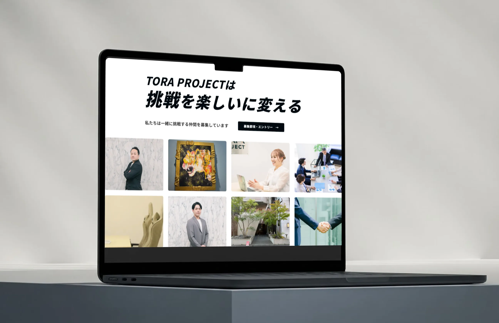

W O R K S
制作実績
02
website
TORA PROJECT株式会社


挑戦への一歩を、
力強く後押しするデザインへ。
TORA PROJECT株式会社の採用ページをデザインしました。「挑戦を楽しいに変える」という企業の姿勢や、前向きで勢いのある雰囲気が伝わるよう、力強い文字表現と写真を生かして表現しています。複数の事業や募集職種を分かりやすく整理し、求職者が会社への理解を深めながら、迷わずエントリーへ進めるページを目指しました。


- ターゲット
- 新しい環境で、経験やスキルを生かして挑戦・成長したい求職者の方。
- 目的
- 会社の理念や働く環境を分かりやすく伝え、求職者の応募を後押しすること。
- 情報設計
- ファーストビューでは「挑戦を楽しいに変える」というメッセージを大きく配置し、会社の姿勢を印象的に伝えました。その後に、会社について、募集職種、働く環境、エントリーの順で構成しています。会社への理解を深めたうえで、自分に合う職種や働き方、条件を確認し、スムーズに応募まで進める流れを意識しました。また、ページ上部にもエントリーへの導線を設け、応募を決めている方がすぐに行動できるようにしています。
- デザインプロセス
- TORA PROJECTの前向きで挑戦的な姿勢を表現するため、力強いタイポグラフィと写真を生かした、勢いのあるデザインを目指しました。文字の大きさや配置にメリハリをつけ、情報量が多い中でも単調にならず、最後まで興味を持って読み進められるよう工夫しています。また、写真から会社の雰囲気や働く人の姿が伝わるよう、情報とのバランスを調整しました。求職者が内容を理解しやすいことと、TORA PROJECTらしさが印象に残ることの両立を意識して制作しました。
- 制作期間
-
企画 / 情報設計 / WF 1週間 デザイン 1週間
- 使用ツール
- Figma

O T H E R W O R K S
制作実績


CONTACT
お問い合わせ
ポートフォリオをご覧いただきありがとうございます。
Web制作のご相談やご依頼など、下記メールにお気軽にお問い合わせください。
内容を確認後、2日以内にご返信いたします。